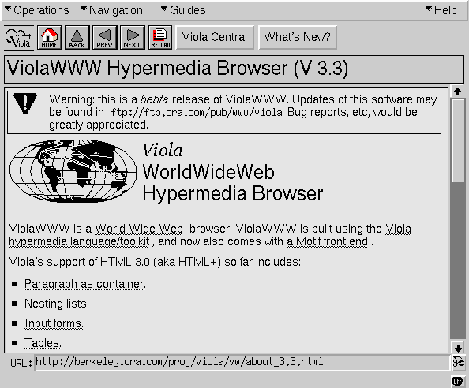
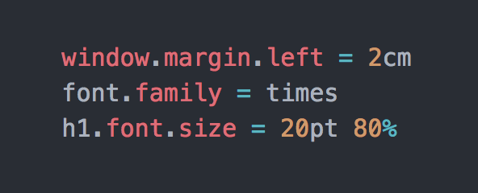
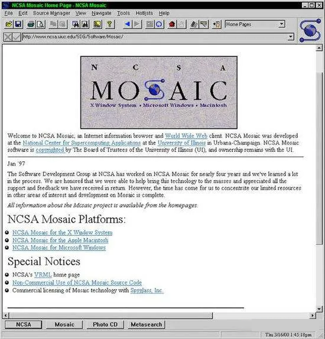

dahai 发表于2023.07.05 ，共有2条评论 。
Tim
Berners-Lee（蒂姆·伯纳斯·李） ，英国科学家，万维网之父，于1989年在欧洲核子研究组织（CERN）正式提出万维网的设想。该网络最初是为了满足世界各地大学和研究所的科学家之间对自动信息共享的需求而设计和开发的，这也是为什么HTML的顶层声明是
document，标签名、文档对象模型的名称也是由此而来。
1990年12月，他开发出了世界上第一个网页浏览器。1993年4月30日，欧洲核子研究组织将万维网软件置于公共领域，把万维网推广到全世界，让万维网科技获得迅速的发展，深深改变了人类的生活面貌。
1991年8月，第一个静态页面诞生了，这是由Tim Berners-Lee发布的，想要告诉人们什么是万维网。从第一个静态页面至今，历史的车轮滚滚向前，一个又一个技术诞生和沉寂。

他创造了超文本标记语言（HTML），并创建了历史上第一个网站。当然，现在只剩下了由 CERN 恢复的网站副本：info.cern.ch
dahai 发表于2023.07.12 ，共有0条评论 。
在HTML迅猛发展的 90 年代，不同的浏览器根据自身的 HTML 语法结构来支持实现不同的样式语言。在最初的 HTML 版本中，由于只含有很少的显示属性，所以用户可以自己决定显示页面的方式。
但是，不同的人对于网页的显示样式要求不一样，于是装饰网页样式的 CSS（层叠样式表，Cascading Style Sheets）诞生了。
早期 CSS 的语法设计看上去类似后来的 JavaScript 语法（当时 JavaScript 尚未存在），实际上，CSS 的这个写法借鉴了 X11 Window System 中的 X 资源。

1994 年，Håkon Wium Lie 最初提出了 CSS 的想法，联合当时正在设计 Argo 的浏览器的Bert Bos，他们决定一起合作设计 CSS，于是创造了 CSS
的最初版本。紧接着，他们在芝加哥的Mosaic and the Web 大会上第一次正式提出了 CSS 的建议，1995 年他们一起再次展示了这个建议。当时 W3C 刚刚建立，W3C 对 CSS
很感兴趣，为此专门组织了一次讨论会。
1996 年 12 月，W3C 推出了 CSS 规范的第一版本。
1997 年，W3C 颁布 CSS1.0 版本 ，CSS1.0 较全面地规定了文档的显示样式，可分为选择器（id、class、element、element和class组合）、样式属性、伪类、
对象几个部分。这一规范立即引起了各方的关注，随即微软和网景公司的浏览器均能支持 CSS1.0，这为 CSS 的发展奠定了基础。
1998 年，W3C 发布了 CSS 的第二个版本，目前的主流浏览器都采用这标准。CSS2 的规范是基于 CSS1 设计的，包含了 CSS1
所有的功能，并扩充和改进了很多更加强大的属性。包括选择器、位置模型、布局、表格样式、媒体类型、伪类、光标样式。
2005 年 12 月，W3C 开始 CSS3 标准的制定，到目前为止该标准还没有最终定稿。
CSS 经历了 20 多年的发展，从 PC 端到移动端，在前端工程化不断进步的今天，随着CSS的规范不断的完善升级，前端业务复杂度越来越高，带来的工程也越来越庞大，我们前端开发者对 CSS
工程化的方案也不断地探索。现在一大批 CSS 预处理和后处理工具涌现，比较流行的 CSS 预处理器有 Sass、Less，CSS 后处理器诸如
clean-css、AutoPrefixer、Rework、PostCSS 等。
那么关于 CSS 将来发展会怎么样？未来 CSS 还能不能胜任自己的角色，会不会有新的模型代替它？对于这些问题，Håkon Wium Lie 认为 CSS
目前还能够胜任，还没有看到能够取代它的新模型出现，新的技术肯定会层出不穷，但应该是对 CSS 的扩展而不是代替。他还表示，我们今天写的 CSS 代码，500 年后的计算机仍然能看懂。
dahai 发表于2023.07.14 ，共有0条评论 。
故事要从一个叫Mosaic的浏览器讲起，它是由美国伊利诺大学的NCSA组织在1993年发布的第一个可以显示图片的浏览器。当时是很了不起，浏览器能显示图片了！轰动一时，从电脑一段能够看到另一端的图片了。

后来，Mosaic研发的核心成员马克·安德森（Marc Andreessen）毕业了，他与几何图形发生器的发明人吉姆·克拉克（Jim.H.Clark）共同创立了Mosaic Communication
Corporation，公司成立后，由于当时安德森是使用大学的设备和资金进行开发（打工仔），因此伊利诺伊大学拥有 Mosaic
的商标权，而且伊利诺伊大学已将技术转让给Spy
Glass公司，因此开发团队必须彻底重新撰写浏览器程式码并改名为网景公司（Netscape）。在二人领导下，公司合力进行新一代浏览器的研发，试图打破Mosaic的垄断并取得业界的领导地位。所以对新浏览器名为
Netscape Navigator，即“导航者”。而它的对内称呼为Mozilla，意为Mosaic杀手，也是之后火狐母公司的名字。
1994年，网景公司（Netscape）发布了 Navigator 浏览器 0.9
版，这是世界上第一款比较成熟的网络浏览器，轰动一时。但是这款浏览器只能浏览页面，无法与用户互动。网景急于解决浏览器与用户交互这个问题，比如，如果网页上有一栏"用户名"要求填写，
浏览器就无法判断访问者是否真的填写了，只有让服务器端判断。如果没有填写，服务器端就返回错误，要求用户重新填写，这太浪费时间和服务器资源了。
这个任务落在了一个叫布兰登·艾奇(Brendan
Eich)的人身上，艾奇1961年出生在美国加州的森尼维尔市，毕业于伊利诺伊大学香槟分校，1995年4月，34岁的他加盟网景公司，被指定为网页脚本语言的设计师，他觉得，没必要设计得很复杂，
这种语言只要能够完成一些简单操作就够了，比如判断用户有没有填写表单。因而，为了应付公司安排的任务，他只用10天时间就把JavaScript 设计出来了。
实际上，JavaScript与Java无关。JavaScript最初发布时称为Mocha，后来被重命名为LiveScript，那为什么叫“Java”“Script”呢？其实这源于当时发生的另外一件大事：1995年Sun公司将Oak语言改名为Java，正式向市场推出。Sun公司大肆宣传，许诺这种语言可以"一次编写，到处运行"（Write
Once, Run Anywhere），它看上去很可能成为未来的主宰。
网景公司动了心，决定与Sun公司结成联盟。它不仅允许Java程序以applet（小程序）的形式，直接在浏览器中运行；甚至还考虑直接将Java作为脚本语言嵌入网页，只是因为这样会使HTML网页过于复杂，后来才不得不放弃。
总之，当时的形势就是，网景公司的整个管理层，都是Java语言的信徒，Sun公司完全介入网页脚本语言的决策。因此，Javascript后来就是网景和Sun两家公司一起携手推向市场的，网景公司成功地蹭了一把热度，利用Java
这个因特网时髦词汇达到推广目的，就在Netscape Navigator 2.0即将正式发布前，Netscape将其更名为
JavaScript。因此这种语言被命名为"Java+script"并不是偶然的。
但是仅仅一个月之后，1995年5月，网景公司做出决策，未来的网页脚本语言必须"看上去与Java足够相似"，但是比Java简单，使得非专业的网页作者也能很快上手。
由于设计时间太短，语言的一些细节考虑得不够严谨，导致 JS 诞生后很长一段时间，写出来的程序混乱不堪。总的来说，Brendan Eich 的设计思路是这样的：
借鉴C语言的基本语法；
借鉴Java语言的数据类型和内存管理；
借鉴Scheme语言，将函数提升到"第一等公民"（first class）的地位；
借鉴Self语言，使用基于原型（prototype）的继承机制。
所以，JavaScript语言实际上是两种语言风格的混合产物----（简化的）函数式编程+（简化的）面向对象编程。这是由Brendan Eich（函数式编程）与网景公司（面向对象编程）共同决定的。
1996年 Netscape Navigator
3.0问市，此时网景对浏览器市场的占有率达到70%的高峰。作为应用软件的平台，浏览器的发展潜力对微软的Windows操作系统构成了巨大威胁。安德森——在上世纪90年代被人称为“下一个比尔·盖茨”——曾夸下海口称在网景面前，Windows只能充当一堆设计拙劣的设备的驱动程序。
盖茨对互联网的判断当属后知后觉，他认为浏览器不过是某种类型的信息高速公路的雏形。因此从 1995 年Netscape Navigator 2.0 发布以来，市场上的网页浏览器标准都以 Netscape
主导，从1995获得Mosaic（Spyglass公司）的授权后，微软公司就一直在开发为自家IE浏览器服务的语言。但遗憾的是IE浏览器面对不可一世的Netscape
Navigator可以说是不堪一击。
在1995年6月21日，微软在网景总部举行了4小时会谈，试图寻找一种战略合作关系。据安德森本人的说法，微软的与会代表咄咄逼人，不但提议划分浏览器市场，而且要求网景的产品仅运行于旧版本的Windows上。当时的安德森才24岁，意气风发自然不可能同意其收购计划。
两个公司的争斗愈演愈烈，微软公司更是在盖茨的要求下，暂缓其他业务的开发，全力投入到新的IE浏览器开发中。1996年8月13日，微软IE3发布。IE 3.0 搭载了一个 JavaScript
的克隆版，叫做 JScript（而之所以这样命名是为了避免与 Netscape
潜在的许可纠纷）。浏览器大战正式开始，每家浏览器支持不同的脚本，但是1997年IE4的市场占有率仅仅达到了15%，而Netscape依旧高达70%，到1998年，由于 IE 浏览器与 Windows
捆绑销售，网景浏览器节节败退，到了1999年两者的情况得到了翻转，微软占据了绝大部分浏览器市场，而网景公司几乎可以用苟延残喘来形容，年底网景公司被美国在线收购。
2001年，IE 6 随着
Windows XP 一起发布，随后在很多年里全球市场占有率超过 80%，成为前端开发者的梦魇，由于 IE 6 的巨大成功，微软狂妄自大，直接解散了 IE
开发团队，迈出了走向覆灭的第一步。谷歌觉的这是一个机会，于是雇佣了一些firefox和ie的开发者，经过数年研发，在2008年推出了Chrome浏览器，发布当年拿下全球1%的份额，11年全球份额超过firefox，2016年，占全球市场份额的62%。2004年，谷歌发布
Gmail 在线网页，使用户和开发者眼前一亮，2005年，Jesse 将谷歌用到的技术命名为
AJAX，从此前端技术正式出现，2006年，jQuery发布，它屏蔽了浏览器差异，大大加快了前端开发效率，此后的十年，jQuery大放异彩，直到IE不行了，jQuery才热度降低，不过至今还有很多人使用。
在微软进入后，有 3 种不同的 JavaScript 版本同时存在：Netscape Navigator 3.0 中的 JavaScript、IE 中的 JScript 以及 CEnvi 中的
ScriptEase。作为开发者同一段逻辑的代码，要分别写三遍，这无疑极大的降低了开发效率。随着业界担心的增加，这个语言的标准化显然已经势在必行。
为了互用性，1996年8月，Navigator
3.0一发布之后，JavaScript标准草案就被提交给欧洲计算机制造商协会（ECMA），它是国际通信标准的机构，总部设在瑞士日内瓦。1997年，在ECMA（欧洲计算机制造商协会）的协调下，由Netscape、Sun、微软、Borland组成的工作组确定统一标准：ECMA-262。完整的JavaScript实现包含三个部分：ECMAScript，文档对象模型（DOM），浏览器对象模型。2015年ECMAScript
6（ES6）正式发布，并且更名为“ECMAScript 2015”。它吸收了之前ES4，ES5的内容，ECMAScript
2015的发布代表JS迎来了新时代，它是是JavaScript语言的下一代标准，提供了许多新的语法和编程特性以提高ECMAScript的开发效率并优化ECMAScript的开发体验。
时间流转到2020年，曾经浏览器支持的 Jave、Flash、VBScript 等等等等已经全部湮灭在历史的尘埃中，只有 JavaScript，一个只用了 10
天设计出来的脚本语言，仍然站在前端语言的金字塔顶端，继续书写它的传奇。同时也基于JavaScript开发出了许多新的框架如AngularJS，
ReactJS，MeteorJS，Vue，以及服务端的NodeJS等，推动者互联网不断发展。
dahai 发表于2023.07.16 ，共有0条评论 。
不适合开发大型程序
JavaScript没有名称空间（namespace），很难模块化；没有如何将代码分布在多个文件的规范；允许同名函数的重复定义，后面的定义可以覆盖前面的定义，很不利于模块化加载。
非常小的标准库 JavaScript提供的标准函数库非常小，只能完成一些基本操作，很多功能都不具备。
null和undefined null属于对象（object）的一种，意思是该对象为空；undefined则是一种数据类型，表示未定义。
typeof null; // object
typeof undefined; // undefined
var foo;
alert(foo == null); // true
alert(foo == undefined); // true
alert(foo === null); // false
alert(foo === undefined); // true
全局变量难以控制，JavaScript的全局变量，在所有模块中都是可见的；任何一个函数内部都可以生成全局变量，这大大加剧了程序的复杂性。
a = 1;
(function(){
b = 2;
alert(a);
})(); // 1
alert(b); // 2
自动插入行尾分号，JavaScript的所有语句，都必须以分号结尾。但是，如果你忘记加分号，解释器并不报错，而是为你自动加上分号。有时候，这会导致一些难以发现的错误。比如，下面这个函数根本无法达到预期的结果，返回值不是一个对象，而是undefined。
function(){
return {
i = 1
};
}function(){
return; {
i = 1
};
}
加号运算符，+号作为运算符，有两个含义，可以表示数字与数字的和，也可以表示字符与字符的连接。
alert(1+10); // 11
alert("1"+"10"); // 110alert(1+"10"); // 110
alert("10"+1); // 101
NaN，NaN是一种数字，表示超出了解释器的极限。它有一些很奇怪的特性：
NaN === NaN; //false
NaN !== NaN; //true
alert( 1 + NaN ); // NaN
数组和对象的区分，由于JavaScript的数组也属于对象（object），所以要区分一个对象到底是不是数组，相当麻烦。Douglas Crockford的代码是这样的：
if (arr &&
typeof arr === 'object' &&
typeof arr.length === 'number' &&
!arr.propertyIsEnumerable('length')){
alert("arr is an array");
}
== 和 ===，==用来判断两个值是否相等。当两个值类型不同时，会发生自动转换，得到的结果非常不符合直觉。
"" == "0" // false
0 == "" // true
0 == "0" // true
false == "false" // false
false == "0" // true
false == undefined // false
false == null // false
null == undefined // true
" \t\r\n" == 0 // true
基本类型的包装对象，JavaScript有三种基本数据类型：字符串、数字和布尔值。它们都有相应的建构函数，可以生成字符串对象、数字对象和布尔值对象。
new Boolean(false);
new Number(1234);
new String("Hello World");alert(typeof 1234); // number
alert(typeof new Number(1234)); // object


原来如此，学习了！
发表于2023-07-06 10:22:14
回顾历史，可以知道Web从哪里来，也就能更深刻预见Web的未来发展。
发表于2023-07-06 14:23:00